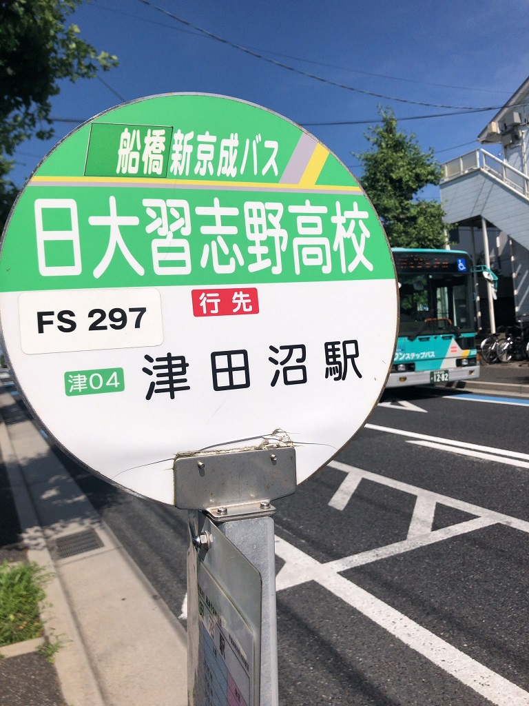

乗り換えがめんどくさい！
既にお気づきの方もいらっしゃると思いますが、前のページまで津田沼経由の魅力を語ってきましたけれど、津田沼経由には非常に大きなデメリットが存在します。それは、JR津田沼駅から新京成の新津田沼駅までの乗り換えがめんどくさいことです。google先生によると、屋根のない場所を約4,5分歩かないといけないそうです。
JR津田沼駅(北口)から京成線新津田沼駅
乗り換えがめんどくさいならバスを使え
僕は3年間乗り換えの為に地下鉄大手町駅からJR東京駅を歩いてきた人間なので、これくらいええやん？と思うのですが、一般的には津田沼から新津田沼は遠いそうです。そういった意見をお持ちの方は、バスの利用がおススメです。
JR津田沼駅北口を降りてすぐ、3番バス乗り場から北習志野行きの新京成バスが出ています。これに約15分間乗り、「日大習志野高校」バス停で下車すると、12号館そばの日大習志野高校近くまで行くことができます。これなら北習志野駅から大学まで歩く手間も省けるので、おススメです。
